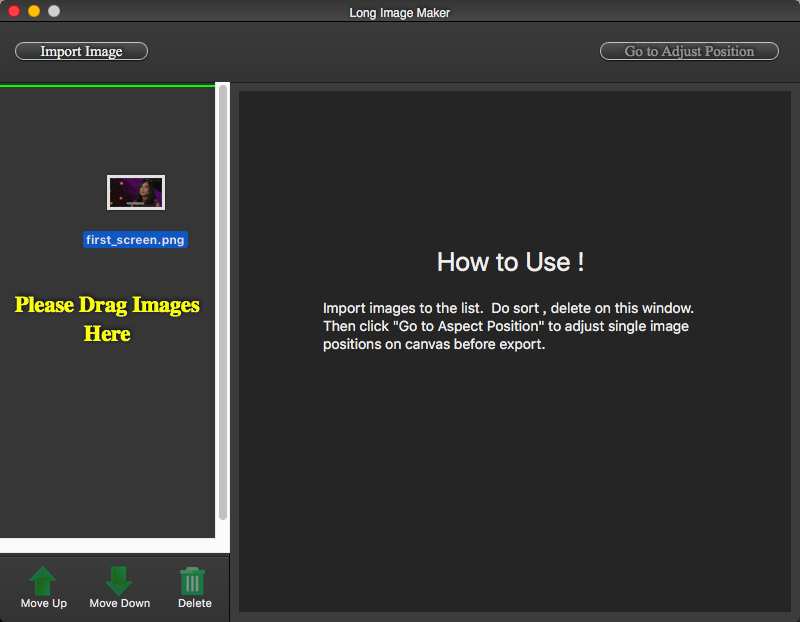

The missing tool for handle subtitle
This is a very convenient tool, you can use it to easily complete a number of pictures of the subtitles merge. Perhaps you can achieve the results you want with other tools, but if you use our tools, efficiency will increase a lot, but also save you a lot of valuable time.
How to use it
1. Impot the images or just drag them into app

2. Maybe you want adjust the order of these images, because the subtiles should be tacken in order to show
3. Generate the final image and you also can do some minor adjust for the subtitle height
4. Export it
5. Well done!